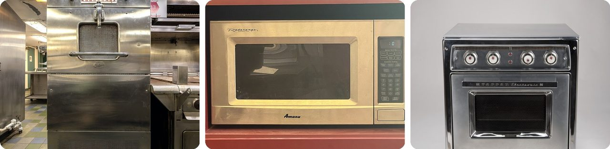
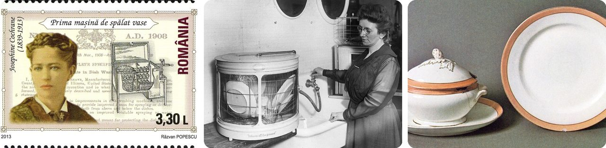
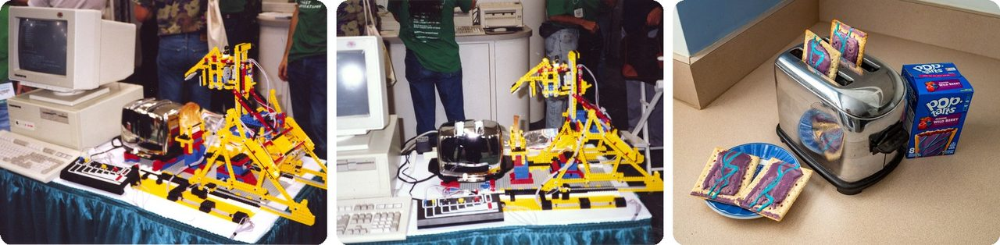

🌍 Top 10 Everyday Appliances and Their Weird Mishaps
Nov 18, 2026
1. 🇺🇸 The microwave oven was discovered by a melted candy bar

In 1945, Percy Spencer, a self-taught engineer at the company Raytheon, was working next to a running radar set. He noticed the candy bar in his pocket had melted.He wanted to know why, so he pointed microwaves at food on purpose. The first thing he cooked was popcorn. The second was an egg, and it exploded in the face of one of the people testing it.
The first microwave oven for sale, the 1947 Radarange, was about 1.8 m (5 ft 11 in) tall and weighed 340 kg (750 lb), about as much as a grand piano. Raytheon kept improving it, so at first it was rented to hotels and restaurants for $5 a day instead of sold.
It's a kitchen gadget that started as a ruined snack.
2. 🇦🇺 A microwave fooled astronomers into chasing "space signals"
 At the Parkes Observatory in Australia, a giant radio telescope kept picking up short bursts that looked a lot like fast radio bursts, mysterious flashes from deep space. Old records showed 46 of these fake bursts between 1998 and 2015.
At the Parkes Observatory in Australia, a giant radio telescope kept picking up short bursts that looked a lot like fast radio bursts, mysterious flashes from deep space. Old records showed 46 of these fake bursts between 1998 and 2015.
Astronomers nicknamed them "perytons," after a made-up winged deer that casts the shadow of a man, because they seemed to be made by people. In 2015 they finally caught the culprit: someone at the observatory opening a microwave door before the timer ran out.
When the door opens early, the microwave lets out a quick radio chirp as it shuts off. The two microwaves to blame were more than 27 years old, and they made a fake burst about half the times the door was opened too soon.
Basically, the space mystery was somebody's impatient lunch.
3. 🏴 The world's first webcam was pointed at a coffee pot
 In 1991, researchers at the University of Cambridge's computer lab were tired of walking to the Trojan Room only to find the coffee pot empty. So two of them aimed a camera at it and sent the picture to everyone's computer.
In 1991, researchers at the University of Cambridge's computer lab were tired of walking to the Trojan Room only to find the coffee pot empty. So two of them aimed a camera at it and sent the picture to everyone's computer.
The image was tiny, just 128 by 128 grey dots, smaller than a postage stamp on today's screens. In 1993 it went on the World Wide Web, and people around the world started checking a coffee pot in England.
The camera was switched off in 2001, and newspapers like The Washington Post covered it. One of the coffee machines later sold on eBay for £3,350.
In other words, the first webcam's big job was saving people a wasted walk.
4. 🇬🇧 British TV breaks make the power grid panic over kettles
 In Britain, when a popular TV show goes to an ad break, millions of people get up and switch on the kettle for tea at the same moment. This is called TV pickup, and British kettles are strong, using 2.5 to 3 kilowatts each.
In Britain, when a popular TV show goes to an ad break, millions of people get up and switch on the kettle for tea at the same moment. This is called TV pickup, and British kettles are strong, using 2.5 to 3 kilowatts each.
A normal pickup adds 200 to 400 megawatts of demand in an instant. The biggest ever came on July 4, 1990, right after England lost a World Cup penalty shootout to West Germany: 2,800 megawatts.
The grid plans for it ahead of time. Dinorwig, a power station in Wales that stores energy as water in a lake up a mountain, can send out 1,320 megawatts in just 12 seconds by letting that water rush down.
Think of it as a whole country flushing the toilet at once, but with tea.
5. 🇬🇧 The vacuum cleaner's inventor was arrested for sucking up silver
 In 1901, English engineer Hubert Cecil Booth watched a machine that blew dust off chairs and thought: why not suck it up instead? He tested the idea by putting a handkerchief on a restaurant chair and sucking the dust through it with his mouth.
In 1901, English engineer Hubert Cecil Booth watched a machine that blew dust off chairs and thought: why not suck it up instead? He tested the idea by putting a handkerchief on a restaurant chair and sucking the dust through it with his mouth.
His machine, nicknamed "Puffing Billy," was so big it rode on a horse-drawn cart. Workers parked it outside a building and ran long hoses through the windows to clean inside.
It caused some trouble. Booth got complaints about the noise and was even fined for frightening horses. After cleaning the Royal Mint, where coins are made, he was arrested on the way out, because he'd forgotten to empty a machine full of silver dust. He was let go quickly.
Basically, it was a robbery by accident, with a vacuum cleaner.
6. 🇺🇸 The dishwasher was invented because someone's fancy dishes kept chipping

Josephine Cochrane was part of Chicago high society, and after one of her dinner parties some of her family heirloom dishes got chipped while being washed. She decided a machine could do it better.She measured her dishes and built wire racks shaped to fit plates, cups and saucers. The racks sat on a wheel inside a copper tub → a motor turned the wheel → hot soapy water sprayed up and rained down on the dishes. It was the first dishwasher to clean with water pressure instead of scrubbers.
She got her patent on December 28, 1886. At the 1893 World's Fair in Chicago, nine of her machines washed dishes in the restaurants, and her company later became part of KitchenAid.
It's a whole new machine, all to save a few plates.
7. 🇩🇪 Albert Einstein invented a fridge
 In the 1920s, newspapers in Berlin reported that a family had died when a seal in their refrigerator broke and toxic gas leaked into their home. Albert Einstein and his former student Leó Szilárd decided to fix that.
In the 1920s, newspapers in Berlin reported that a family had died when a seal in their refrigerator broke and toxic gas leaked into their home. Albert Einstein and his former student Leó Szilárd decided to fix that.
Their idea: a fridge with no moving parts, so there was no seal to wear out. It ran on just a source of heat and three liquids, water, ammonia and butane. Between 1926 and 1934 they got 45 patents in six countries.
But it was less efficient than other fridges, and safer cooling gases came along. The two earned only $750 for the patents they sold, about $10,000 in today's money.
In other words, one of history's greatest scientists also tried to fix the kitchen fridge.
8. 🇺🇸 A blender company got famous by blending phones
 Tom Dickson, who started the blender company Blendtec, once blended a box of matches as an experiment. That led to a video series where he opened each episode with "Will it blend? That is the question."
Tom Dickson, who started the blender company Blendtec, once blended a box of matches as an experiment. That led to a video series where he opened each episode with "Will it blend? That is the question."
He blended an iPad, an iPhone 4 and a "cochicken": half a cooked chicken with a can of Coca-Cola, bones and all (not safe to eat).
In 2007 he blended a video camera. Afterward, the video team tried to return what was left of it to the electronics store Best Buy. It didn't work.
It's a cooking show where the recipe is your phone.
9. 🍞 Toasters went online before most people did

In 1990, computer scientists John Romkey and Simon Hackett connected a toaster to the internet, making it the first appliance you could control online. Most homes didn't have internet yet.The toaster ideas got weirder. In 2001 a designer at Brunel University in England made a toaster that phoned a weather service and burned the forecast, sunny or cloudy, onto your bread.
Later, a toaster that used Twitter became an early example of the "Internet of Things," the idea of everyday objects talking to the internet.
Think of it as breakfast that can check its email.
10. 🇬🇧 A tea-making alarm clock had its name rejected over a river
 A teasmade is a bedside alarm clock that also makes tea, so a hot cup is ready the moment you wake up. In 1902, a Birmingham gunsmith named Frank Clarke patented one and sold it as "A Clock That Makes Tea!"
A teasmade is a bedside alarm clock that also makes tea, so a hot cup is ready the moment you wake up. In 1902, a Birmingham gunsmith named Frank Clarke patented one and sold it as "A Clock That Makes Tea!"
In 1932 George Absolom invented an electric one and wanted to register the name "Teesmade." The Patent Office said no, because it wasn't made on the River Tees, and the name might confuse people.
Later the Goblin Teasmade, sold by the same company that grew out of Booth's vacuum cleaner business, became a hit. Teasmades peaked in the 1960s and 1970s, and one even wakes up Brian May in Queen's "I Want to Break Free" music video.
It's an alarm clock that bribes you out of bed with tea.
Fun fact
The Trojan Room coffee pot inspired a joke that's still hiding inside the internet. On April Fools' Day 1998, a serious internet standards group published rules for controlling coffee pots online, including error code 418: "I'm a teapot." When officials tried to remove it from popular software in 2017, a 15-year-old started a "Save 418" campaign and won. Which makes you wonder what other April Fools' jokes ended up becoming real.
Photo credits (Wikimedia Commons)
- #1: Raytheon RadaRange NS Savannah MD1.jpg by Acroterion, CC BY-SA 4.0
- #1: Amana Radarange Microwave Oven.jpg by TaurusEmerald, CC BY-SA 4.0
- #1: Tappan Model RL-1 Microwave Oven (smithsonian_american_history_museum) by Raytheon Manufacturing Co. and Tappan, CC0
- #2: CSIRO Parkes Radio Telescope (flickr) by amandabhslater, CC BY-SA 2.0
- #2: CSIRO ScienceImage 4350 CSIROs Parkes Radio Telescope with moon in the background.jpg by division, CSIRO, CC BY 3.0
- #2: CSIRO Parkes Radio Telescope (flickr) by amandabhslater, CC BY-SA 2.0
- #3: Trojan Room Coffee Pot (x1.jpg).jpg by Daniel Gordon, Martyn Johnson and Quentin Stafford-Fraser, CC BY-SA 3.0
- #3: Trojan Room coffee pot xcoffee.png by Quentin Stafford-Fraser, CC BY-SA 3.0
- #3: Trojan Room coffee pot xvcoffee.jpeg by Daniel Gordon, Martyn Johnson and Quentin Stafford-Fraser, CC BY-SA 3.0
- #4: Electric kettle phillips white.JPG by Rafa, Public domain
- #4: Dinorwig pumped hydro Power Station at Slate Quarry near Llanberis (flickr) by John Englart (Takver), CC BY-SA 2.0
- #4: General electric - electric water kettle.jpg by Cantons-de-l'Est, CC BY-SA 4.0
- #5: Hubert Cecil Booth Straßenstaubsauger von 1901.jpg by Unknown authorUnknown author, Public domain
- #5: Booth's vacuum cleaner, Science Museum, London.jpg by Matt Brown, CC BY 2.0
- #5: Antique vacuum cleaner and woodstove (flickr) by quinet, CC BY 2.0
- #6: Stamps of Romania, 2013-34.jpg by Post of Romania, Public domain
- #6: Dishwasher demonstration 1921.jpg by Unknown authorUnknown author, Public domain
- #6: Lincoln buff set - 1864.jpg by Detweiler, Susan G. (1975). American Presidential China. Washington, D.C.: Smithsonian Institution, p. 46., Public domain
- #7: Einstein Refrigerator pat1781541 clarified.jpg by Einstein/Szilard with annotations by P. Brandon Malloy, Public domain
- #7: Albert Einstein 1921 (cropped).jpg by Harris & Ewing Studio, active 1905 - 1977, CC0
- #7: Leo Szilard.jpg by U.S. Department of Energy, Public domain
- #8: Blendtec Total Blender.jpg by Trebz, CC BY 2.0
- #8: Tom Dickson.jpg by Andrew Baron from NYC, United States, CC BY 2.0
- #8: Will Scoble Blend? No! (flickr) by Robert Scoble, CC BY 2.0
- #9: The Internet Toaster (flickr) by public.resource.org, CC0
- #9: Internet Toaster (flickr) by public.resource.org, CC BY 2.0
- #9: 20200721-FlickrFriday Polished Vintage Toaster (flickr) by C E Andersen, CC BY 2.0
- #10: Early Teasmade - Science Museum London (flickr) by Haydn Blackey, CC BY-SA 2.0
- #10: GoblinTeasmade.jpg by MortimerCat, CC BY-SA 3.0
- #10: Teasmade (flickr) by Simon Harriyott, CC BY 2.0


.jpg){kind=link}


.jpg){kind=link}